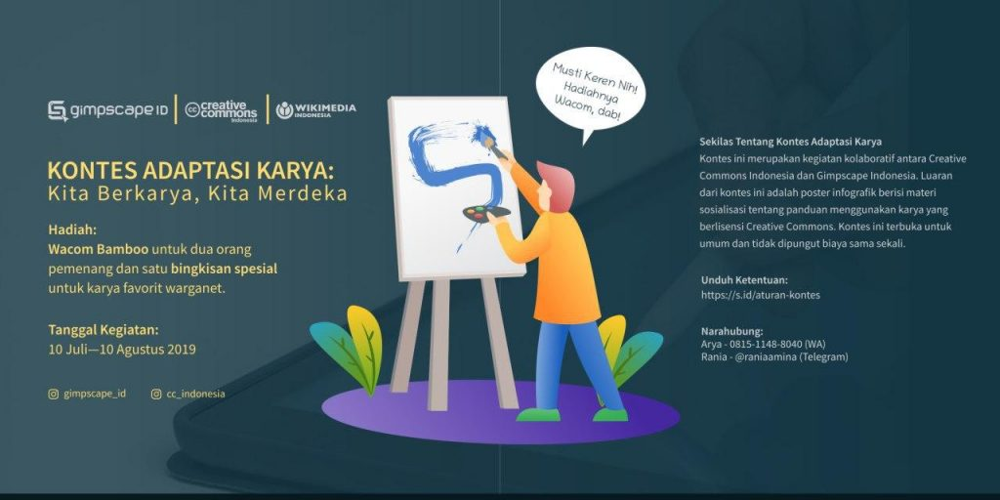

Bekerjasama dengan Creative Common Indonesia, Gimpscape Indonesia Adakan Kontes Adaptasi Karya

Kontes Adaptasi Karya: Kita Berkarya, Kita Merdeka lahir dari sebuah kolaborasi antara Creative Common Indonesia dan komunitas Gimpscape Indonesia. Kontes ini dibuat dengan tujuan menghasilkan poster infografis yang berisi materi sosialisasi tentang panduan menggunakan karya yang berlisensi Creative Commons. Kontes ini dapat diikuti oleh semua orang serta tidak dipungut biaya.
Sumber materi telah disediakan oleh panitia dan dapat diubah/disesuaikan selama tidak mengurangi esensi dari pesan yang seharusnya tersampaikan. Untuk mendapatkan materinya, kamu bisa unduh pada tautan berikut.
Kontes ini juga membawa juri-juri yang profesional di bidangnya seperti:
Untuk kamu yang berminat untuk mengikuti kontes ini, berikut ketentuan yang perlu kamu ketahui:
Infografis oleh
Segera kirimkan karya terbaikmu ke surel gimpscape.id@gmail.com dengan subjek “KONTES CCID” (kapital di tiap huruf) sebelum 10 Agustus 2019 pukul 22.00 WIB. Jangan lupa untuk sertakan identitas diri pada badan surel seperti: nama, alamat lengkap, nomor hp. Selain itu peserta juga wajib untuk mengunggah karyanya di akun instagram dengan menggunakan tagar:
#AkuPakaiCC #gimpscape #CCID
Jangan lupa juga untuk me-mention akun instagram @cc_indonesia dan @gimpscape_id. Hadiah dari kontes ini juga tidak kalah menarik yaitu tablet Wacom Bamboo untuk dua orang pemenang dan juga satu bingkisan spesial untuk karya favorit yang mendapat paling banyak like dari warganet di Instagram.
Untuk pemenang kontes, panitia akan mengumumkan hasilnya pada tanggal 17 Agustus 2019 pada pukul 10.00 WIB melalui media-media sosial Creative Commons Indonesia dan Gimpscape Indonesia. Jadi tunggu apalagi? Yuk ikutan! (info lengkap, kunjungi laman berikut ini)